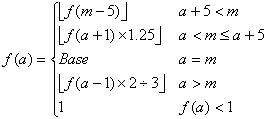

- 알카드의 초기 상태
- 능력치 설명
- 능력치 성장 방식
- 경험치 조견표
- 경험치 계산식
- 데미지 계산식
- 물 속성
- 요도 무라마사 육성
- PSX 에뮬레이터로 플레이하는 당신에게
알카드의 초기 상태
알카드의 초기 상태는 오프닝의 파이널 스테이지 「피의 론도」의 플레이에 의해서 결정된다. 구체적으로는 아래와 같은 법칙에 의해 결정된다.
- 시간
드라큘라를 쓰러뜨린 시간(메뉴 화면→시스템→타임 어택의 「리히터가 드라큘라를 쓰러뜨린다」의 시간)이 빠를수록 능력치가 높다.
1:00 이내에 쓰러뜨릴 경우 최고의 능력치가 되며, 1:01 이상, 2:01 이상, 3:01 이상, 10:00 이상의 5단계로 변화한다.
- HP
드라큘라를 쓰러뜨릴 때 남은 HP가 많을수록 능력치가 높다.
노 데미지로 쓰러뜨릴 때가 최고, HP 50% 이상, HP 50% 미만, 마리아가 도우러 왔을 경우의 4단계로 변화한다.
- 서브 웨폰
피의 론도 스테이지를 클리어했을 때 소지하고 있던 서브 웨폰이 [십자가, 성수, 없음] 에 따라 능력치가 변화한다.
- 포션의 소지
드라큘라와의 전투에서 마리아가 도우러 오면, 처음부터 포션을 소지하고 있다.
- 하트 리페어의 소지
드라큘라를 쓰러뜨릴 때 하트 수가 0이면, 처음부터 하트 리페어를 소지하고 있다. (다만, 포션의 입수 조건을 우선하여 하트 리페어를 입수하지 못하는 경우가 있다)
- 뉴트론 봄의 소지
드라큘라와의 전투가 시작될 때, 하트를 41개 이상 소지하고 있으면 처음부터 뉴트론 봄을 소지하며, 능력치가 STR-1, INT+1 이 된다.
최대 초기 능력치
1:00 이내에 노 데미지로 드라큘라를 쓰러뜨렸을 경우 능력치는 최대가 되며, 서브 웨폰에 의해서 아래의 스테이터스가 된다. (뉴트론 봄이 없음을 기준)
| 서브 웨폰 |
초기 능력치 |
| HP |
MP |
HEART |
STR |
CON |
INT |
LCK |
| 성수 |
80 |
25 |
60 |
13 |
12 |
13 |
12 |
| 십자가 |
80 |
30 |
60 |
13 |
12 |
12 |
12 |
| 없음 |
85 |
25 |
55 |
14 |
13 |
13 |
17 |
어느 서브 웨폰이 제일 좋은지는 올리고 싶은 능력치에 따라 다르지만, 십자가를 제일 추천한다.
능력치 설명
- STR = ATT에 보너스
- CON = DEF에 보너스(소), 독과 저주의 지속 시간에 영향
- INT = 서브 웨폰의 데미지, 사역마의 성능, 일부 마법(예 : 다크 메타몰포제의 지속 시간)에 영향
- LCK = 크리티컬 히트의 확률, 아이템 드롭 확률, 타리스만의 발동 확률에 영향
- ATT = 물리 공격력
- DEF = 물리 방어력
능력치 성장 방식
레벨이 상승할 때 능력치의 성장 방식은 아래와 같다.
- HP : 레벨에 따라 고정
- MP : 랜덤으로 4~5 상승
- HEART : 반드시 2 상승
- STR, CON, INT, LCK : 모두 랜덤으로 0~1 상승
※ 레벨업 직전의 세이브를 다시 부르는 것으로 능력치 성장의 경향을 바꿀 수 있다.
경험치 조견표
| LV | 필요 경험치 | +HP | LV | 필요 경험치 | +HP |
|---|
| 1 |
0 |
* |
51 |
222000 |
30 |
| 2 |
100 |
1 |
52 |
234000 |
30 |
| 3 |
250 |
1 |
53 |
246000 |
30 |
| 4 |
450 |
1 |
54 |
258000 |
30 |
| 5 |
700 |
1 |
55 |
270000 |
30 |
| 6 |
1000 |
1 |
56 |
282000 |
30 |
| 7 |
1350 |
1 |
57 |
294000 |
30 |
| 8 |
1750 |
1 |
58 |
306000 |
30 |
| 9 |
2200 |
1 |
59 |
318000 |
30 |
| 10 |
2700 |
3 |
60 |
330000 |
40 |
| 11 |
3250 |
3 |
61 |
344000 |
40 |
| 12 |
3850 |
3 |
62 |
358000 |
40 |
| 13 |
4500 |
3 |
63 |
372000 |
40 |
| 14 |
5200 |
3 |
64 |
386000 |
40 |
| 15 |
5950 |
3 |
65 |
400000 |
40 |
| 16 |
6750 |
3 |
66 |
414000 |
40 |
| 17 |
7600 |
3 |
67 |
428000 |
40 |
| 18 |
8500 |
3 |
68 |
442000 |
40 |
| 19 |
9450 |
3 |
69 |
456000 |
40 |
| 20 |
10450 |
6 |
70 |
470000 |
50 |
| 21 |
11700 |
6 |
71 |
486000 |
50 |
| 22 |
13200 |
6 |
72 |
502000 |
50 |
| 23 |
15100 |
6 |
73 |
518000 |
50 |
| 24 |
17500 |
6 |
74 |
534000 |
50 |
| 25 |
20400 |
6 |
75 |
550000 |
50 |
| 26 |
23700 |
6 |
76 |
566000 |
50 |
| 27 |
27200 |
6 |
77 |
582000 |
50 |
| 28 |
30900 |
6 |
78 |
598000 |
50 |
| 29 |
35000 |
6 |
79 |
614000 |
50 |
| 30 |
39500 |
10 |
80 |
630000 |
100 |
| 31 |
44500 |
10 |
81 |
648000 |
100 |
| 32 |
50000 |
10 |
82 |
666000 |
100 |
| 33 |
56000 |
10 |
83 |
684000 |
100 |
| 34 |
61500 |
10 |
84 |
702000 |
100 |
| 35 |
68500 |
10 |
85 |
720000 |
100 |
| 36 |
76000 |
10 |
86 |
738000 |
100 |
| 37 |
84000 |
10 |
87 |
756000 |
100 |
| 38 |
92500 |
10 |
88 |
774000 |
100 |
| 39 |
101500 |
10 |
89 |
792000 |
100 |
| 40 |
110000 |
20 |
90 |
810000 |
200 |
| 41 |
120000 |
20 |
91 |
830000 |
200 |
| 42 |
130000 |
20 |
92 |
850000 |
200 |
| 43 |
140000 |
20 |
93 |
870000 |
200 |
| 44 |
150000 |
20 |
94 |
890000 |
200 |
| 45 |
160000 |
20 |
95 |
910000 |
200 |
| 46 |
170000 |
20 |
96 |
930000 |
200 |
| 47 |
180000 |
20 |
97 |
950000 |
200 |
| 48 |
190000 |
20 |
98 |
970000 |
200 |
| 49 |
200000 |
20 |
99 |
999999 |
200 |
| 50 |
210000 |
30 |
|
|
|
경험치 계산식
적을 쓰러뜨릴 때 얻을 수 있는 경험치는 알카드의 레벨에 의해서 변동한다.
괴물 도감에 기재된 경험치는 서로 레벨이 같았을 경우 얻을 수 있는 경험치(이하 기본 경험치)이다.
적의 레벨보다 알카드의 레벨이 낮으면 얻을 수 있는 경험치가 많아지고, 반대는 적어진다.

- a : 알카드의 레벨
- f(a) : 취득 경험치
- m : 적의 레벨
- Base : 적의 기본 경험치
※ 최소 경험치는 무조건 1
※ 알카드의 레벨이 낮을수록 1레벨마다 1.25배 (각각 1.25배 → 약 1.5배 → 약 2배 → 약 2.5배 → 약 3배 →)
※ 알카드의 레벨이 높을수록 1레벨마다 약 0.66배 (각각 약 0.66배 → 약 0.44배 → 약 0.3배 → 약 0.2배 → 약 0.13배 →)
데미지 계산식
데미지 = 공격력 × 상태 배율 - 적의 방어력
※ 상태 배율
공격측이 독에 걸림 = 0.5
대상이 공격에 내성을 가짐 = 0.5
대상이 공격에 내성을 가짐, 공격측이 독에 걸림 = 0.25
대상이 공격에 약점을 가짐 = 2
대상이 공격에 약점을 가짐, 공격측이 독에 걸림 = 1
물 속성
괴물 도감에서 물(水) 속성이라는 것이 쓰여져 있다. 설명서의 속성 설명에는 물 속성이 존재하지 않는다. 또한, 무기나 방어구에도 물 속성을 가지는 것이 존재하지 않는다. 빙결(氷結) 속성을 말하는 것인지 확인해봐도 빙결 속성과는 무관했다. 결과적으로 게임내에서 아무 효과도 없고 확인할 방법도 없는 무의미한 속성이다.
요도 무라마사 육성
'요도 무라마사'는 몬스터의 피를 받으면 공격력이 상승하는 무기이다. (한계는 아마 999?, 536 정도만 있어도 파이널 가드가 한 방) 이론상 이 게임의 최대 공격력을 가지는 무기이고, 공격 범위도 넓어서 좋다. 문제는 피를 받아야 하는데 노가다를 해야 한다.
일단 아래와 같이 장비를 한다.
- 서브 웨폰 : 나이프
- 무기 : 요도 무라마사
- 망토 : 피로 물든 망토
- 그 외 : 방어구를 벗겨서 방어력을 내린다. & INT가 마이너스가 되는 아이템을 장비해서 나이프의 데미지를 낮춘다.
노가다를 할 장소는 역전성의 [천정수맥]이다. 이 에리어의 보스 「도플갱어 LV40」의 방에서 왼쪽 아래의 방으로 가보면, '크레이지 옥토퍼스'라는 몬스터가 대량으로 서식하고 있다. 이후 아래와 같이 행동을 한다.
- 서브 웨폰 '나이프'를 연속으로 크레이지 옥토퍼스에게 사용한다. 이때 가까이 접근해서 피를 몸으로 받으면 된다.
- 소모한 하트는 일부러 데미지를 받아 하트를 생성해서 다시 회복한다.
나이프로는 몬스터를 쓰러뜨려도 화면만 약간 이동시키면 다시 부활한다. (이유는 불명)
PSX 에뮬레이터로 플레이하는 당신에게
PSX계 에뮬레이터의 공통 사항으로 게임의 버그가 아닌 에뮬레이터의 문제로 로딩 구간에서 게임이 멈추는 버그가 있다. 이 버그는 2000년대 초반부터 알려진 버그인데 현재인 2015년이 되도록 아무 해결법이 안나왔다. (해외 포럼 등을 구글링해도 역시나 옛날 글만 가득...)
일단 귀찮더라도 회피하는 방법은 있다. 바로 로딩 구간(CD의 방, 보스전 방문 앞)에서 스타트 버튼으로 게임 메뉴를 1회 열기/닫기를 한 후에 진입하는 것이다.(여는 속도는 때에 따라서 시간이 걸림) 정확한 이유는 모르겠지만 게임 메뉴를 여닫는 행동으로 이 버그를 회피할 수 있다.